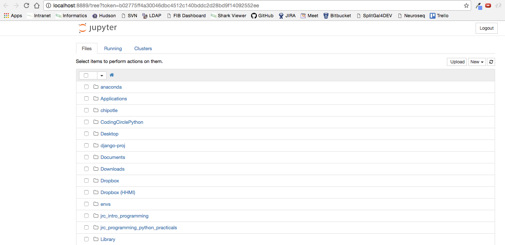
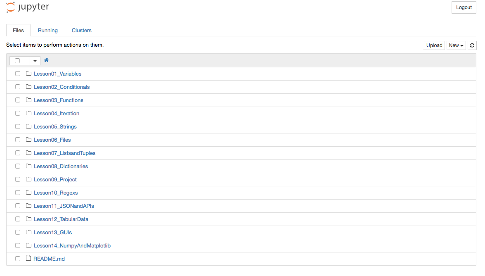
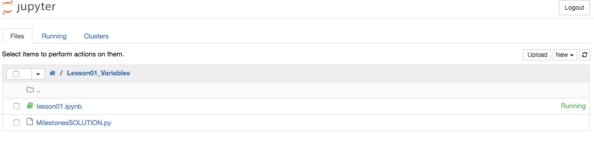
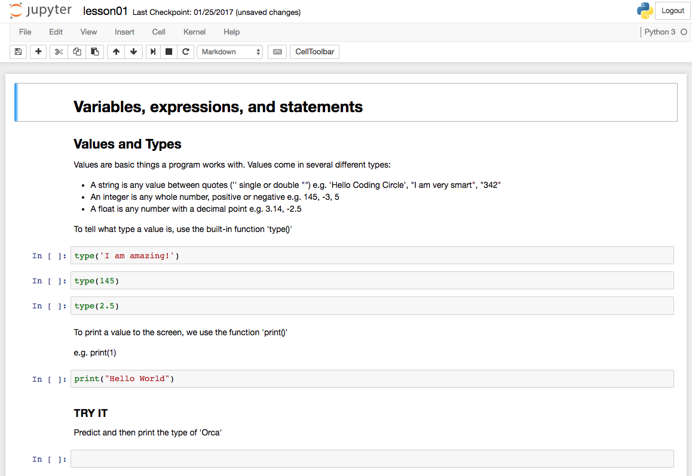

Women's Coding Circle
learns Python
INSTALLATION INSTRUCTIONS
OSX
Python
- Download and install Anaconda for Python 3.5.
- Use all of the defaults for installation except make sure to check Make Anaconda the default Python.
WINDOWS
Python
- Download and install Anaconda for Python 3.5.
- Use all of the defaults for installation except make sure to check Make Anaconda the default Python.
LINUX
Python
- Download and install Anaconda for Python 3.5.
- In your terminal window type one of the below and follow the instructions:
bash Anaconda3-4.2.0-Linux-x86_64.sh
JOIN US
Instructor: Emily Nielson
Thursdays
Time: 12:00 - 1:00 p.m.
For more info: e-mail weaverc10 .at. janelia.hhmi.org
Jupyter Notebook Instructions
From Project Jupyter: "The Jupyter Notebook is a web application that allows you to create and share documents that contain live code, equations, visualizations and explanatory text. Uses include: data cleaning and transformation, numerical simulation, statistical modeling, machine learning and much more."
Launching Jupyter Notebook
OSX
Step 1. Open Anaconda Navigator (this can take a while to load the first time)

Step 2. Launch Jupyter Notebook (you may need to click the install button first)

Step 3. This opens a webpage that has a navigation tree for your filesystem. Navigate to where you downloaded CodingCirclePython and lauch the lesson you are working on.




WINDOWS
Step 1. Launch Jupyter Notebook from the start menu

Step 2. This opens a webpage that has a navigation tree for your filesystem. Navigate to where you downloaded CodingCirclePython and lauch the lesson you are working on.